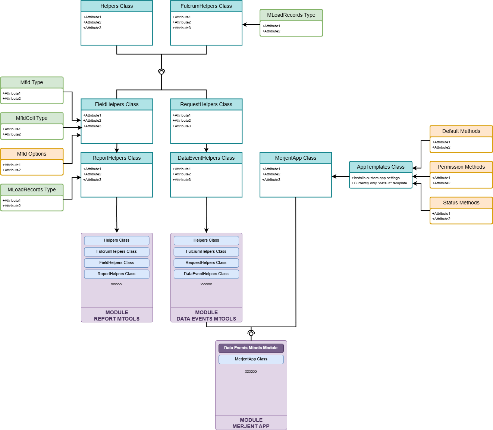

Overview - Merjent Fulcrum Tools Package
What is Merjent Fulcrum Tools?
Merjent Fulcrum Tools is a comprehensive JavaScript toolkit designed to streamline the development and maintenance of Fulcrum mobile data collection applications for environmental consulting field work.
Note: Python tools have been moved to a separate repository: merjent-fulcrum-pyTools
The Problem It Solves
When building multiple Fulcrum apps, you often face:
- Code duplication - Same data validation logic across apps
- Maintenance challenges - Updating functionality across dozens of apps
- Manual workflows - Repetitive permission management and status updates
- Report inconsistency - Different PDF report styling across projects
The Solution
This toolkit provides:
- Reusable JavaScript libraries for Fulcrum data events and PDF reports
- Pre-built patterns for common workflows (permissions, status updates, field locking)
- Professional report templates with consistent styling
- Build pipeline for automated bundling, minification, and documentation
Package Components
The toolkit consists of four JavaScript modules:
1. Mtools (Data Events)
Purpose: Commonly used methods for the Fulcrum data events scripting environment
Use when: Building data validation, field calculations, API integrations, or form logic
Key Features:
- Field helpers (get/set values, validate, calculate)
- Form schema navigation (find fields, parse structure)
- Weather data integration (NWS API, fire danger ratings)
- API request utilities
- General JavaScript utilities (date, string, array operations)
Typical Use Cases:
// Validate field input
ON('change', 'email_field', (event) => {
if (!M.isValidEmail(event.value)) {
INVALID('Please enter a valid email address');
}
});
// Fetch weather data
const weather = await M.fetchNWSData(latitude, longitude);
2. Mtools (PDF Reports)
Purpose: Specialized methods for the Fulcrum PDF report scripting environment
Use when: Generating professional PDF reports from field data
Key Features:
- HTML grid/table generation with automatic layouts
- Photo galleries with customizable columns
- Section-based report building
- Field value formatting (checkboxes, choice fields, addresses)
- Repeatable sections handling
Typical Use Cases:
// Generate a photo grid
const photoGrid = M.buildPhotoGrid(photos, 2); // 2 columns
// Build a data table
const table = M.buildDefaultSection(sectionDataName, fields, options);
3. MerjentApp (Mapp)
Purpose: Streamlined app creation class for Fulcrum data events with built-in workflows
Use when: Creating a new Merjent Fulcrum app with standard permission/status patterns
Key Features:
- Permission Control - Automatically restrict fields by user role (Admin, Editor, User, Viewer)
- Status Workflows - Automated status transitions (Pending → Submitted → Approved → Complete)
- Field Locking - Lock fields based on status or role
- Photo Management - Validate photos, enforce location requirements
- Template-Based - Pre-configured templates for common app patterns
Typical Workflow:
const mApp = module.exports.MerjentApp;
// Configure once
mApp.dnSubmit = 'submit_report';
mApp.completeLockCondition = ['Complete', 'Resolved'];
mApp.getStatus = mApp.statusMethods.p_s_complete;
// Automatic workflows
ON('load-record', mApp.start); // Sets permissions, locks fields
ON('change', mApp.dnSubmit, mApp.updateStatus); // Auto-updates status
4. Utils Class
Purpose: General JavaScript utilities included in all modules
Use when: You need common data manipulation outside of Fulcrum-specific logic
Key Features:
- Data type validation (
isNumber,isDate,isBlank) - String manipulation (
strProper,dn2Title,strAfter) - Date/time helpers (
dtAddDays,dtDaysDiff,iso2dt) - Array operations (
arrSort,arrUnique,arrRem) - Object/row operations (
rows2Sorted,rowsFind) - Geographic utilities (
dd2dms,dms2dd)
Hybrid Access Pattern:
- Static:
Utils.methodName()- Use anywhere, including calculated fields - Instance:
M.methodName()- When you have Mtools instantiated - Both patterns work identically
Can be used standalone in Fulcrum calculated fields, Google Apps Scripts, or any JavaScript environment.
Python Tools
Python tools for batch operations and administrative tasks have been moved to a separate repository:
Key Tools (in pyTools repo):
updateMtools.py- Deploy updated MTools code to all appsfindMtoolFunctions.py- Search and bulk replace across all appscreateForm.py- Create Fulcrum forms from CSV definitionsfield_calc/- Batch field calculation engine
Using from this repo:
PowerShell runner scripts are provided in tools/ to call the Python tools:
# Update all apps with latest MTools
.\tools\run_updateMtools.ps1
# Search/replace across all apps
.\tools\run_findMtoolFunctions.ps1
Module Structure & Hierarchy
Build Outputs (in dist/)
| File | Used In | Exports | Size |
|---|---|---|---|
merjent-tools-de.mmin.js |
Data Events | Mtools, MLoadRecords |
~40KB |
merjent-tools-mApp.mmin.js |
Data Events | Mtools, MApp, MLoadRecords |
~60KB |
merjent-tools-report.mmin.js |
PDF Reports | ReportHelpers, SecOpt |
~35KB |
merjent-tools-utils.mmin.js |
Any JS Environment | Utils |
~15KB |
Class Inheritance
Two separate inheritance chains for different Fulcrum environments:
Data Events Chain:
Utils (base utilities)
└── FulcrumHelpers (Fulcrum-specific)
└── RequestHelpers (API requests)
└── DataEventHelpers (data events)
Reports Chain:
Utils (base utilities)
└── FulcrumHelpers (Fulcrum-specific)
└── FieldHelpers (field representation & rendering)
└── ReportHelpers (PDF report generation)
MerjentApp (independent, composable)
├── PermissionMixins (role-based access)
├── StatusMixins (workflow automation)
├── PhotoMixins (photo validation)
└── LockingMixins (field locking)
Components Diagram
Choosing the Right Module
Decision Tree
Do you need to build a PDF report?
- YES → Use
merjent-tools-report.mmin.js
Do you need standard Merjent app workflows (permissions, status, locking)?
- YES → Use
merjent-tools-mApp.mmin.js- Includes both
MtoolsandMApp - See MerjentApp Tutorial
- Includes both
- NO → Use
merjent-tools-de.mmin.js- Just
Mtoolshelpers, lighter weight - See Mtools Tutorial
- Just
Do you just need utility functions?
- YES → Use
merjent-tools-utils.mmin.js- Standalone utilities, no Fulcrum dependencies
- Can use in calculated fields or other environments
Quick Start Examples
Data Events with Mtools
//#region !START MERJENT FULCRUM TOOLS!
// ... paste merjent-tools-de.mmin.js ...
//#endregion !END MERJENT FULCRUM TOOLS!
const M = module.exports.Mtools;
ON('load-record', async () => {
// Get field value
const projectName = VALUE('project_name');
// Validate email
const email = VALUE('contact_email');
const emailRegex = /^[^\s@]+@[^\s@]+\.[^\s@]+$/;
if (email && !emailRegex.test(email)) {
ALERT('Invalid email format');
}
});
ON('change', 'date_observed', (event) => {
// Auto-calculate age
const days = Utils.dtDaysDiff(event.value, new Date());
SETVALUE('days_since_observation', days);
});
Data Events with MerjentApp
//#region !START MERJENT FULCRUM TOOLS!
// ... paste merjent-tools-mApp.mmin.js ...
//#endregion !END MERJENT FULCRUM TOOLS!
const M = module.exports.Mtools;
const mApp = module.exports.MerjentApp;
// Configure MerjentApp
mApp.dnSubmit = 'submit_report';
mApp.dnReviewed = 'coordinator_reviewed';
mApp.completeLockCondition = ['Complete', 'Resolved'];
mApp.fieldLockCondition = ['Submitted'];
mApp.getStatus = mApp.statusMethods.p_s_complete;
// Data Events
ON('load-record', mApp.start); // Auto-sets permissions and locks
ON('change', mApp.dnSubmit, mApp.updateStatus); // Auto-updates status
ON('change', mApp.dnReviewed, mApp.addCoordinatorInitials);
PDF Report
//#region !START MERJENT FULCRUM TOOLS!
// ... paste merjent-tools-report.mmin.js ...
//#endregion !END MERJENT FULCRUM TOOLS!
// M is already instantiated in the dist file as: const M = new ReportHelpers();
// Your custom code starts here
// Build section with default grid
const sectionDn = 'site_information';
const fieldDns = FIELDNAMES(sectionDn, {sections: false});
const fields = M.mkMflds(fieldDns);
const secOpts = new SecOpt(null, LABEL(sectionDn), null);
const sectionHTML = M.buildDefaultSection(sectionDn, fields, secOpts);
// Build photo grid
const photos = VALUE('site_photos');
const photoGrid = M.buildPhotoSection(photos, new SecOpt(null, 'Site Photos', null));
Development Workflow
1. Edit Source Code
Make changes in src/ directory
2. Build Modules
# Windows
build.bat
# PowerShell
powershell -ExecutionPolicy Unrestricted -Command .\build\buildPkg.ps1
# Development mode (watch)
npm run dev
3. Test in Fulcrum
Copy from dist/ and paste into Fulcrum app
4. Deploy to All Apps
.\tools\run_updateMtools.ps1
Next Steps
New to the toolkit?
- Read Mtools Tutorial for basic helpers
- Review MerjentApp Tutorial for workflow automation
- Check PDF Reports Tutorial for report generation
Ready to build?
- Choose the appropriate module for your needs
- Copy the built file from
dist/into your Fulcrum app - Follow the code snippets in the tutorials
Need to maintain existing apps?
- See merjent-fulcrum-pyTools for batch operation tools
- Use
updateMtools.pyfor bulk updates - Use
findMtoolFunctions.pyfor bulk refactoring
Contributing?
- Read Development Guide
- Understand naming conventions
- Document with JSDoc comments
- Test before deploying
Additional Resources
- JSDoc API Reference - Complete API documentation
- Fulcrum Developer Docs - Official Fulcrum documentation
- GitHub Repository - Source code and issues
- Changelog - Version history and updates